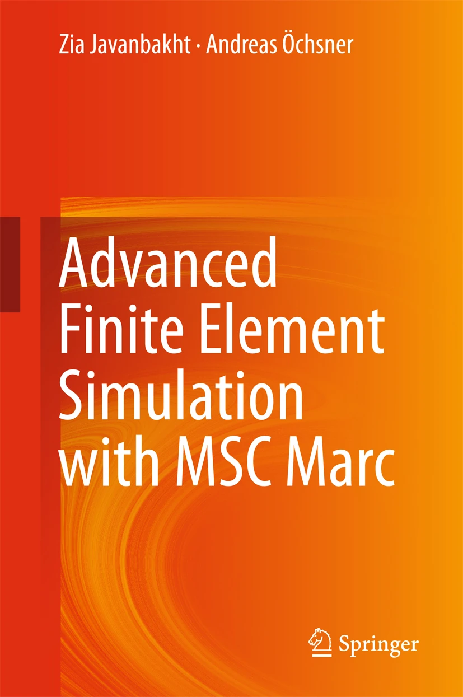

Resources
Code and supplementary material accompanying our books.
Books

Advanced Finite Element Simulation with MSC Marc: Application of User Subroutines
Zia Javanbakht and Andreas Öchsner · Springer, 2017
Listings of the FORTRAN, Python, and C++ programs can be found on GitHub. This repository is public and it will be updated to reflect any feedback or to address any bugs.
View the code on GitHub